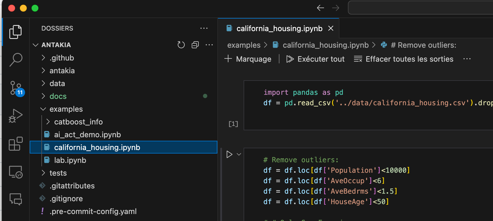
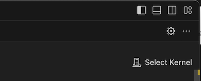
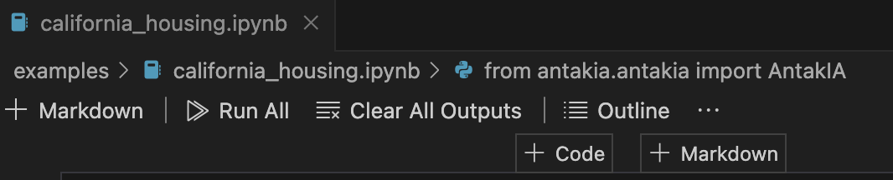

Installation
Important
If you've been invited to our pre-release alpha-test process, you may skip this section and directly proceed to our online version.
Install fron PyPi (recommended)
pip install antakia
Install from source
Clone our repo :
git clone https://github.com/AI-vidence/antakia.git
cd antakia
If you use poetry:
poetry shell
poetry install
If you prefer pip :
python3.10 -m venv . # or >3.10
source bin/activate
pip install -e .
Starting with example notebooks
Important
AntakIA is designed to work within notebooks (Jupyter or Google Collab for example). Then you'll need a notebook to work with AntakIA.
If you cloned our repo you'll find in the~/examples/ folder some sample notebooks (.ipynb files). Otherwise, you can download them manually from our Github page.
If you're note used to notebooks, here are common ways to run them :
-
locally :
- right from Visual Studio Code
- on a local Jupyter server
-
on an online service hosting a notebook server : Google collab, a Jupyter hub (for many users) installed in your university or company
Running notebooks in Visual Studio Code
Open the notebook file (ending with the .ipynb extension) in the file explorer on the left:

At the top right corner of the VScode windows, choose the Python kernel you want to use.

Select your normal Python interpretor if you've installed antakia through pip install.
If you downloaded the code and have installed it by yourself, make sure you chose the virtual environment you set up.
Then you can run the notebok with these buttons :

Running notebooks in a local Jupyter server
Go to your working directory where you have your data and notebooks.
cd <your_directory>
pip install notebook
Then launch the server with :
jupyter notebook
Now your can go to our tutorial.